Original pixel artwork for the full design guide: characters, places, changing timelines and combat. Select an asset to inspect poses, scene layers and exact filenames. This library prepares artwork; it does not add new quests or unlock unfinished game content.
151 catalog entries · 637 standalone SVG files · Read the art-to-design guide · Asset manifest
ade
ansel
auditor
auditor_echo_2031
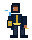
auditor_echo_2064
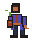
auditor_echo_2148
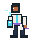
auditor_echo_2312
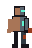
construct_grafted
dax
dax_echo_2031
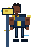
dax_echo_2064
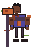
dax_echo_2148
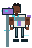
dax_echo_2312
drone_hunter_2031
drone_hunter_2064
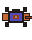
drone_hunter_2148
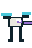
drone_hunter_2312
drone_sentry_2031
drone_sentry_2064
drone_sentry_2148
drone_sentry_2312
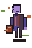
echo_temporal
engineer
faction_trainer
hale
hale_echo_2031
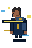
hale_echo_2064
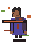
hale_echo_2148
hale_echo_2312
ilo9
ilo9_bound_boss
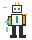
ilo9_echo_2031
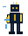
ilo9_echo_2064
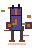
ilo9_echo_2148
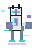
ilo9_echo_2312
mara
mara_echo_2031
mara_echo_2064
mara_echo_2148
mara_echo_2312
militia
pell
quiroga
quiroga_echo_2031
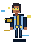
quiroga_echo_2064
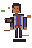
quiroga_echo_2148
quiroga_echo_2312
refugee
shopkeeper
strand_perpetual_phase1
strand_perpetual_phase2
strand_reconciled_duelist
strand_young
strand_young_echo_2031
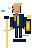
strand_young_echo_2064
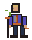
strand_young_echo_2148
strand_young_echo_2312
warden_2031
warden_2064
warden_2148
warden_2312
wren
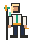
wren_echo_2031
wren_echo_2064
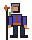
wren_echo_2148
wren_echo_2312
2031_meridian
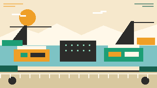
2031_halden
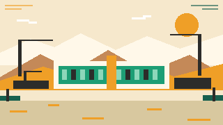
2031_basin
2031_capitol
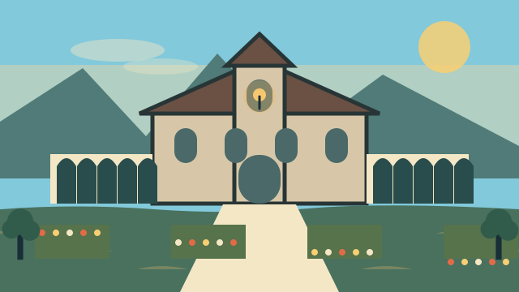
2031_kell
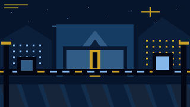
2064_meridian
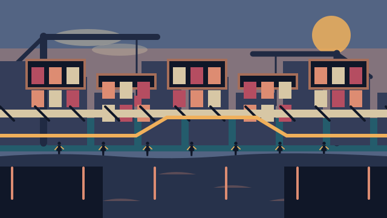
2064_halden
2064_basin
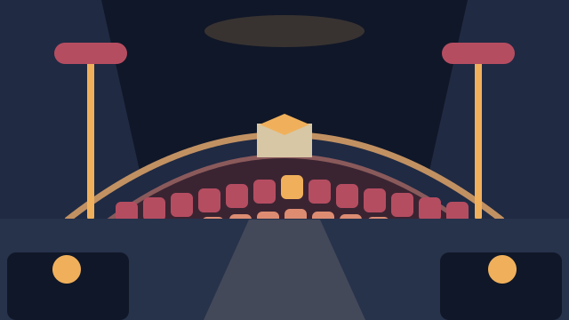
2064_capitol
2064_kell
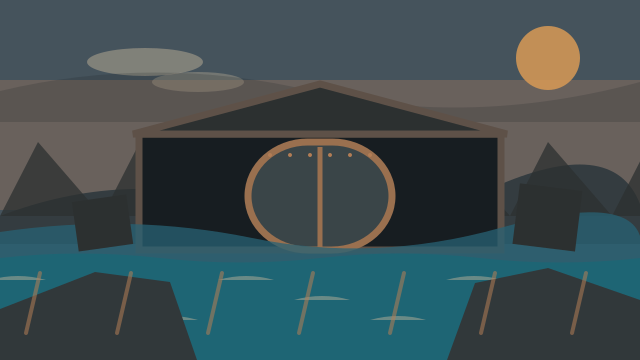
2148_meridian
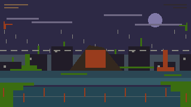
2148_halden
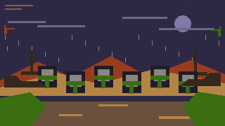
2148_basin
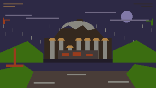
2148_capitol
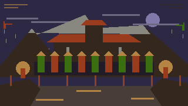
2148_kell
2312_meridian
2312_halden
2312_basin
2312_capitol
2312_kell
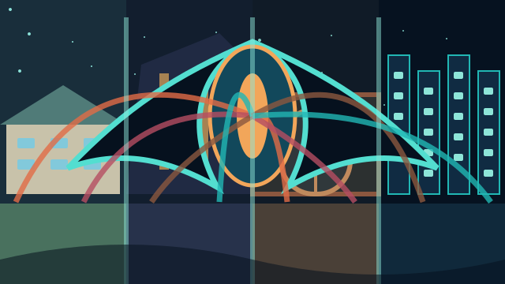
act3_meridian_stack
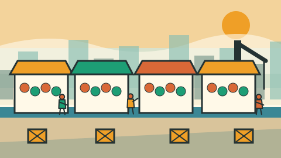
2031_halden_market
2031_founders_bar
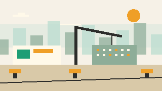
2031_basin_work_camp
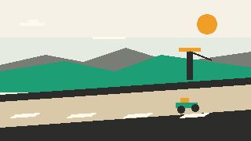
2031_coastal_highway
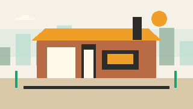
2031_tolliver_bakery
2064_undercity_bazaar
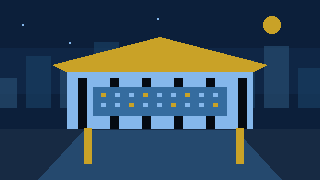
2064_senate_annex
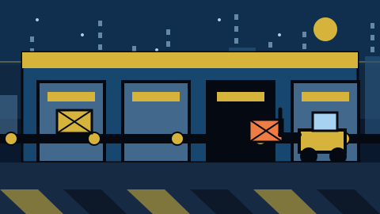
2064_meridian_distribution_hub
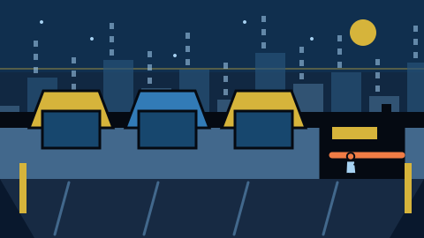
2064_migrant_causeway
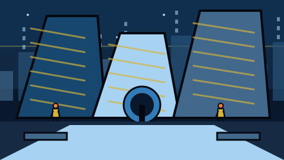
2064_glass_quarter
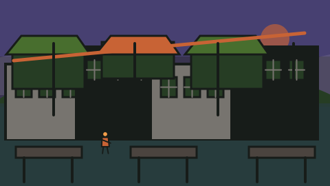
2148_the_stacks
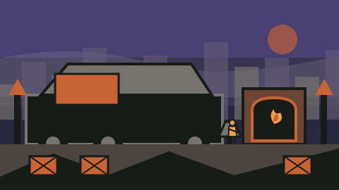
2148_ash_camp
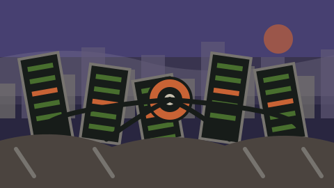
2148_server_graveyard
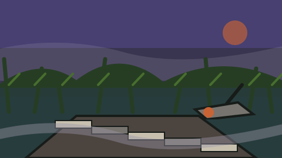
2148_the_fens
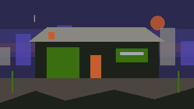
2148_tolliver_safehouse
2312_enclave_7_commissary
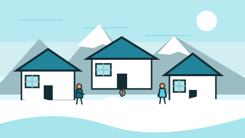
2312_kell_village
2312_allocation_office
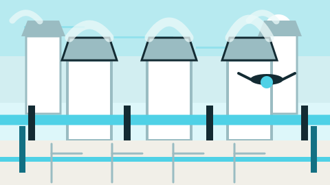
2312_cooling_perimeter
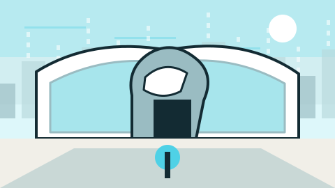
2312_strand_memorial
2031_tolliver_bakery_saved
2031_tolliver_bakery_burned
2148_tolliver_safehouse_present
2148_tolliver_safehouse_absent
2312_kell_village_armed_resistance
2312_kell_village_let_it_fall
2312_enclave_7_commissary_open
2312_enclave_7_commissary_allocated
2312_strand_memorial_museum
2312_strand_memorial_ruin
2312_strand_memorial_shrine
2031_world_map
2064_world_map
2148_world_map
2312_world_map
icon_kinetic
icon_thermal
icon_signal
icon_chronal
icon_rewind
icon_fork
icon_echo
icon_collapse
icon_resolve
icon_threads
icon_tempo
icon_entropy
icon_cinder
icon_choir
icon_commons
icon_relic
icon_credits
icon_barter
icon_allocation
icon_scan
icon_shop
icon_deep_site
icon_save
icon_charter
ending_commons
ending_gift
ending_silence
ending_perpetuity
ending_reconciled